EXTREME TOURS
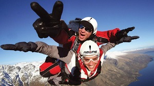
OUTDOOR SPIRIT™ is not only a shop, but also a travel agency for extreme adventures. Careful selection of routes, knowledge of the characteristics of active forms of recreation and tourist areas allow us offer its customers the most interesting, safe, comfortable and rich adventure tours. Our regular partners are leading operators in their respective regions. In our sales offices you can select not only suitable active routes, but also draw up a package that includes travel, transfers, hotel, insurance and guide services.For a full list destinations, please contact our manager.
MT. KILIMANJARO CLIMB, LEMOSHO ROUTE
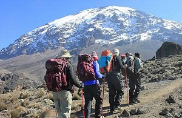
Mount Kilimanjaro, standing majestically at 19,340', has enticed climbers for centuries as one of the "seven summits" of the world. This huge, snow-capped mountain rises dramatically above the vast African plains. To climb Kilimanjaro and watch the sunrise spread its golden light across the savannah below is an experience and personal accomplishment second to none. The Lemosho Route is considered to be the most scenic route on Mount Kilimanjaro, and its longer path allows ample time for acclimatization. Starting in lush rainforest on its western side, we hike through Kili's six ecological zones. We traverse the Shira Plateau and the Southern Circuit, taking in views of Kibo and its incredible glaciers. Our team of top African guides, with their delightful personalities and in-depth knowledge, lead us to the top. Join us on the "Roof of Africa!" Explore even more! Reward your accomplishment with a safari! Our Kilimanjaro Safari Extension begins at Ngorongoro Crater, home to plentiful big game. Next is the world's most famous wildlife reserve, Serengeti National Park. We conclude with a visit to Lake Manyara National Park, where a vast alkaline soda lake meets the dramatic rise of the Great Rift escarpment.
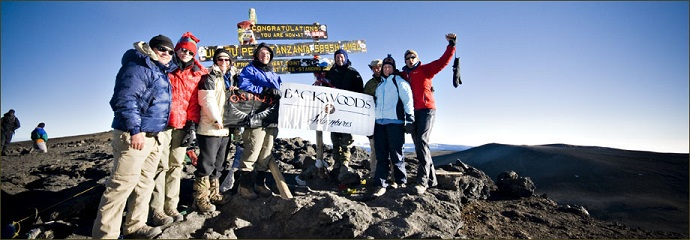
CINQUE TERRE HIKING
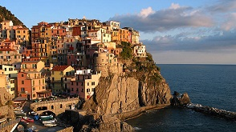
The Cinque Terre: It could be a painting by Picasso—five picturesque fishing villages perched on Mediterranean hillsides, splendidly brushed in sun-washed colors. Medieval fortresses and ripe, plentiful vineyards contrast with harbors filled with gleaming yachts. This enticing vision exists on the Italian Riviera between Genoa and La Spezia. From tiny fishing ports teeming with colorful boats, our walking adventure spans some of the most glorious terrain in Italy.We hike steep, ancient trails connecting the villages of the Cinque Terre, led by knowledgeable guides who give us glimpses into rustic hamlet life. The fragrant sea air and gentle climate of the Ligurian Coast refresh our spirits and at night we enjoy freshly prepared, local cuisine while relaxing at hillside inns that overlook the sea.
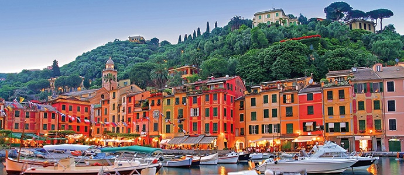
BELIZE PARADISE ISLANDS KAYAKING
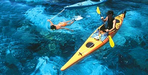
Those seeking the thrill and excitement of a sea kayak journey combined with all the comforts of a beach front lodge need look no further. Paradise Islands Adventure is a great choice brimming with sea, sun, and snorkeling at a world-class destination: the Belize Islands' Barrier Reef.Travelling via top-of-the-line expedition sea kayaks, we paddle between small cayes in the newly formed South Water Caye Marine Park. Each day we explore uninhabited islands, pristine coral reefs, rich fishing grounds, and labyrinthine mangrove channels. Each trip begins with a thorough introduction to sea kayaking and snorkeling; no previous kayak experience is required. Come unwind and join an unforgettable adventure in Belize!
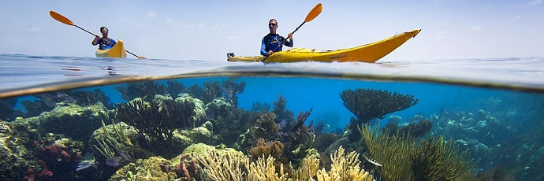
GATEWAY TO THE ARCTIC
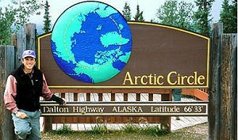
The call of the wild beckons as we explore one of the most remote and magnificent wildernesses in North America. Our journey begins in the frontier town of Fairbanks and presses ever northward as we hike and paddle our way through the Alaskan Bush. Travelling along the storied Dalton Highway towards the Arctic Circle, we enjoy a half-day canoe exploration and a hot springs soak near the small community of Manley. A spectacular flight over the Brooks Range to the Nunamiut village of Anaktuvuk offers an opportunity to learn more about the history of these resilient people. Finally, as we approach the North Slope, two amazing treasures lay waiting. Gates of the Arctic National Park and the Arctic National Wildlife Refuge offer unparalleled hiking and wildlife viewing opportunities as we share the tundra with caribou, grizzly bear, and wolverine. A dip in the Arctic Ocean concludes this unforgettable adventure under the midnight sun!
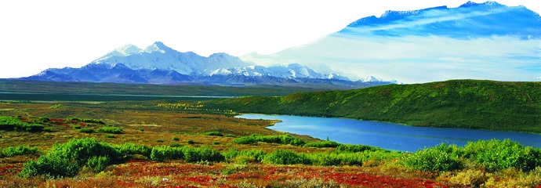
NEW ZEALAND CYCLING, SOUTH ISLAND
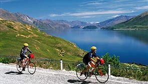
New Zealand's quiet country roads and bike trails offer abundant opportunity to see the country’s amazing landscapes and laid-back lifestyle up close. The snow-capped peaks of the Southern Alps and turquoise blue glacier-fed lakes provide the perfect backdrop as we begin our cycle tour. Ride through the Mackenzie Basin as majestic Mt. Cook sits high on the horizon. We pass lush green pastures, sandy beaches, rugged hills, and volcanic landforms en route to the Pacific Ocean.Continuing, we cycle our way through the historic port city of Oamaru and the vibrant university town of Dunedin on its scenic harbor. Pedal inland through the Central Otago region’s rolling hills, award-winning wine, and original great ride—the Otago Central Rail Trail. Our tour ends with a heart-pumping finale summiting the Crown Range as we enter beautiful Queenstown. Along the way, our nightly accommodations let us visit with locals and gain insight into Kiwi culture.
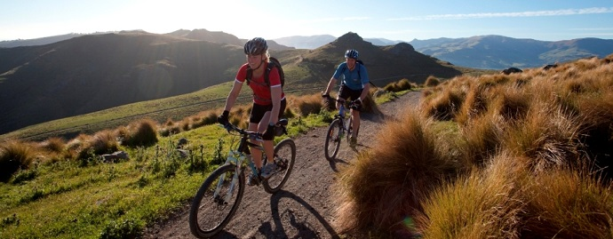
THE CHOMOLHARI TREK
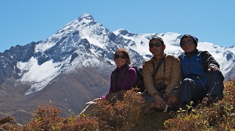
Bhutan, the Land of the Thunder Dragon, is a mystical and medieval kingdom situated along the southern slopes of the Himalaya range between India and Tibet. Here Buddhist culture remains largely untouched by the outside world; its people and nature coexist in a sacred balance. Our journey combines a world-class Himalayan trek to Chomolhari (24,000'), the Mountain Goddess, with a cultural immersion unique to Bhutan. We trek to over 16,000' (Bhonte La) visiting remote villages, learning about the traditional lifestyles of yak-herders and highland farmers along the way. Bring your camera—Bhutan's valleys and mountains, virgin forests and crystal lakes are unsurpassed in their pristine beauty. Explore ancient monasteries clinging to cliff sides, ornate temples, and colorful fortresses (dzongs)—all this, while enjoying superb mountain scenery. This tiny kingdom is a unique blend of old and new—a hidden country slowly opening up to the modern world but with a keen balance of its rich traditions. Join us for this once-in-a-lifetime trek!
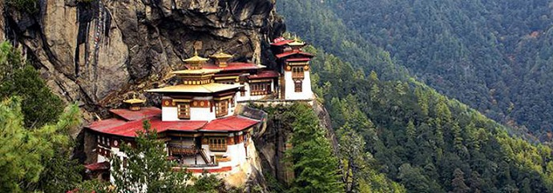